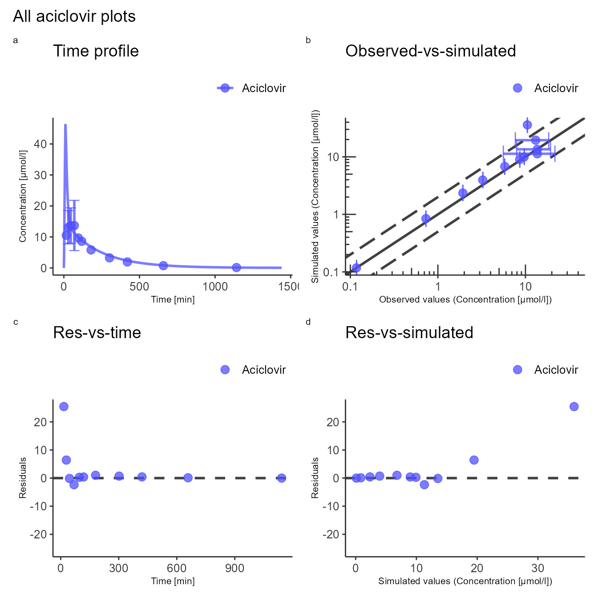

Visualization and reporting
Source:vignettes/visualization-and-reporting.Rmd
visualization-and-reporting.RmdWorkflow
Plotting the simulation results is an important part of model
diagnostics and quality control. Simulated modeling scenarios can be
passed to plotting functions from the ospsuite package to
create uniformly-looking plots. To get familiar with the
DataCombined class used to store matching observed and
simulated data, read the Working
with DataCombined class article. The article Visualizations
with DataCombined covers the basics on how to create
supported plot types and how to customize them.
For the following examples, we will simulate an example scenario as described in Standard workflow and load the corresponding observed data as described in Data handling.
library(esqlabsR)
# Create a project configuration
projectConfiguration <- createDefaultProjectConfiguration()
# Create `ScenarioConfiguration` objects from excel files
scenarioConfigurations <- readScenarioConfigurationFromExcel(
scenarioNames = "TestScenario",
projectConfiguration = projectConfiguration
)
# Run scenario configuration
simulatedScenarios <- runScenarios(
scenarioConfigurations = scenarioConfigurations,
customParams = NULL, saveSimulationsToPKML = FALSE
)
# Load observed data
dataSheets <- "Laskin 1982.Group A"
observedData <- loadObservedData(projectConfiguration = projectConfiguration, sheets = dataSheets)The simulation results are stored in a list returned by the
runScenarios() function. Plotting and visualization is
performed by storing these results along with matching observed data in
a DataCombined object and passing it to plotting functions.
Observed data in the form of DataSet objects are added to a
DataCombined object via the addDataSets()
function, simulated results can be added by using the
addSimulationResults() function. Observed and simulated
data can be linked by setting the groups argument in both
methods. Data sets of the same group will then be plotted together when
calling plotting functions on the DataCombined object.
Let’s create a DataCombined object and populate it with
data with the following code:
dataCombined <- DataCombined$new()
dataCombined$addDataSets(observedData, names = "Observed", groups = "Aciclovir")
dataCombined$addSimulationResults(simulatedScenarios$TestScenario$results,
names = "Simulated",
groups = "Aciclovir"
)Customization of the generated figures - specifying title, axes
ranges, axes units, position of the legend, etc., are done through
plot configurations - objects of the class DefaultPlotConfiguration.
To combine multiple plots into a multi-panel figure, create a
PlotGridConfiguration object, add plots to it, and plot
with the plotGrid() method. Finally, to export a plot to a
file (e.g., PNG or PDF), use an
ExportConfiguration object.
To use configurations with similar look and feel in the different
esqLABS projects, create the configurations using the
following functions:
createEsqlabsPlotConfiguration()createEsqlabsPlotGridConfiguration()createEsqlabsExportConfiguration(projectConfiguration)
The next example shows how to create a multi-panel figure using the default configurations.
plotConfig <- createEsqlabsPlotConfiguration()
gridConfig <- createEsqlabsPlotGridConfiguration()
exportConfig <- createEsqlabsExportConfiguration(projectConfiguration)
plotConfig$title <- "Time profile"
indivPlot <- plotIndividualTimeProfile(dataCombined, defaultPlotConfiguration = plotConfig)
plotConfig$title <- "Observed-vs-simulated"
obsVsSimPlot <- plotObservedVsSimulated(dataCombined, defaultPlotConfiguration = plotConfig)
plotConfig$title <- "Res-vs-time"
resVsTimePlot <- plotResidualsVsTime(dataCombined, defaultPlotConfiguration = plotConfig)
plotConfig$title <- "Res-vs-simulated"
resVsSimPlot <- plotResidualsVsSimulated(dataCombined, defaultPlotConfiguration = plotConfig)
gridConfig$addPlots(list(indivPlot, obsVsSimPlot, resVsTimePlot, resVsSimPlot))
gridConfig$title <- "All aciclovir plots"
gridPlot <- plotGrid(gridConfig)
gridPlot
#> Warning: Removed 8 rows containing missing values (geom_segment).
#> Removed 8 rows containing missing values (geom_segment).
To save the plot to a PNG file, make sure that
fileName argument end with .png:
exportConfig$savePlot(gridPlot, fileName = "All plots.png")